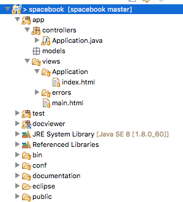
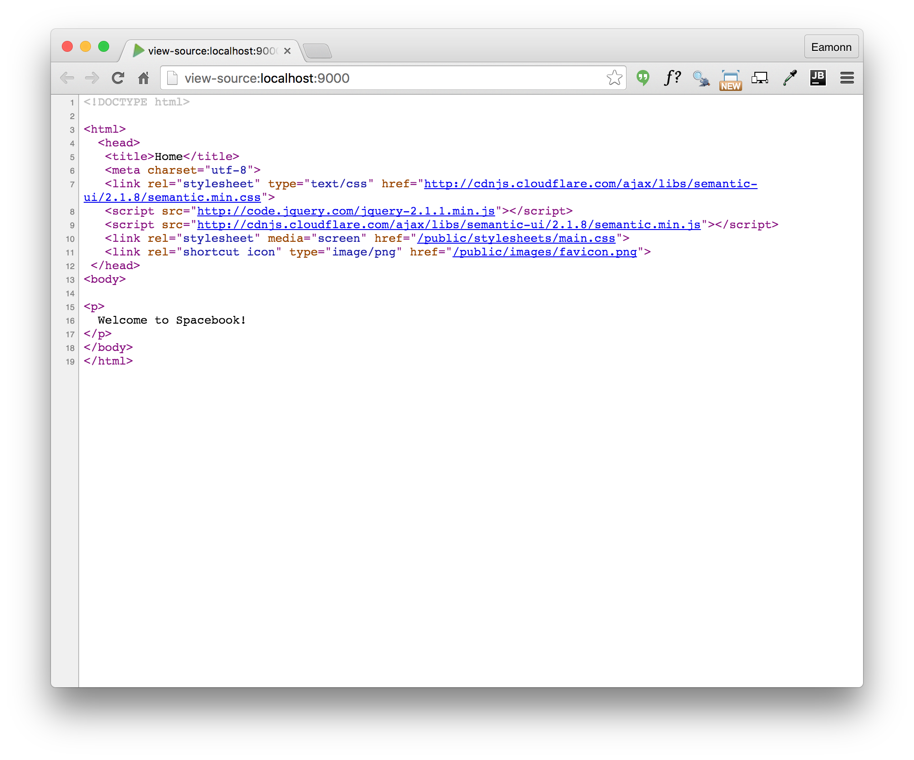
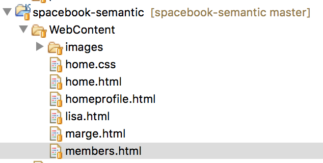
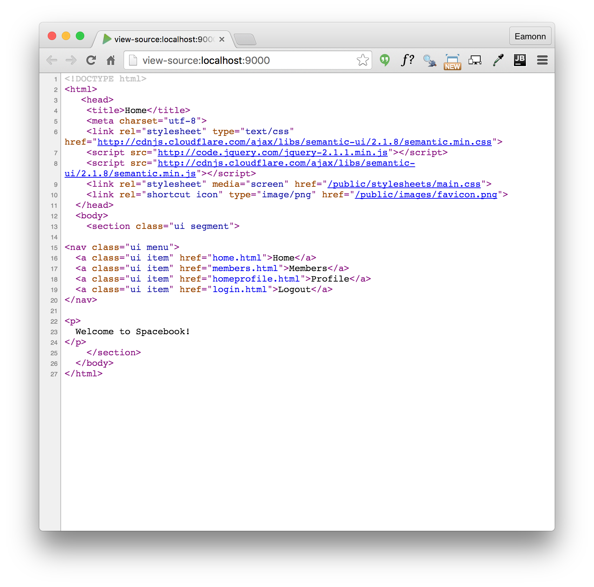

Objectives
Move the Spacebook application from the static site into the structure provide by the Play framework. This will require installation of the framework, creation of a starter project and incorporation of the work we have already completed in the last lab.
Running the Play Application
In DOS, from inside the spacebook folder, type the following command:
play runPlay will respond with something like this:
~ _ _
~ _ __ | | __ _ _ _| |
~ | '_ \| |/ _' | || |_|
~ | __/|_|\____|\__ (_)
~ |_| |__/
~
~ play! 1.4.1, http://www.playframework.org
~
~ Ctrl+C to stop
~
Listening for transport dt_socket at address: 8000
16:30:33,586 INFO ~ Starting /Users/edeleastar/Dropbox/webdev/2012/dev/projects/spacebook
16:30:34,646 WARN ~ You're running Play! in DEV mode
16:30:34,894 INFO ~ Listening for HTTP on port 9000 (Waiting a first request to start) ...
16:30:58,912 INFO ~ Application 'Spacebook' is now started !You may get a dialog from the firewall, asking for permission to run, which you should agree to.
Now run the browser, and navigate to:
you should see something like this:

Also notice that a log message will appear in the command window indicating that the app has started:
16:30:58,912 INFO ~ Application 'Spacebook' is now started !To stop the application, press "Control+C" in the command prompt. If you refresh the browser window, then you should now get an error
Start the app again by typing 'play run' as above. Verify that the app has started by browsing/refreshing to:
Try this a few times to get used to starting/stopping the application
Introducing some Content
In Eclipse, open the java class "Application.java" - which is in the 'controllers' package located within the folder app:
package controllers;
import play.*;
import play.mvc.*;
import java.util.*;
import models.*;
public class Application extends Controller
{
public static void index()
{
render();
}
}Now open the file 'index.html' in the 'views/Application' folder:
#{extends 'main.html' /}
#{set title:'Home' /}
#{welcome /}When you open this file, you may get am "Unsupported Character Encoding" message. If this happens, select 'UTF-8'.
Let us change the title to be "Spacebook", and replace the 'welcome' line with our own greeting:
#{extends 'main.html' /}
#{set title:'Spacebook' /}
<p>
Welcome to Spacebook!
</p>Save the file in Eclipse, and reload this page:
which you may already be browsing.

In the browser, right click and 'view source'. Look carefully at the page source - which should be something like this:
<!DOCTYPE html>
<html>
<head>
<title>Spacebook</title>
<meta charset="utf-8">
<link rel="stylesheet" media="screen" href="/public/stylesheets/main.css">
<link rel="shortcut icon" type="image/png" href="/public/images/favicon.png">
</head>
<body>
<p>
Welcome to Spacebook!
</p>
<script src="/public/javascripts/jquery-1.6.4.min.js" type="text/javascript" charset="utf-8"></script>
</body>
</html>This single page displayed in the browser is generated from two pages in the project
views/main.html
<!DOCTYPE html>
<html>
<head>
<title>#{get 'title' /}</title>
<meta charset="${_response_encoding}">
<link rel="stylesheet" media="screen" href="@{'/public/stylesheets/main.css'}">
#{get 'moreStyles' /}
<link rel="shortcut icon" type="image/png" href="@{'/public/images/favicon.png'}">
</head>
<body>
#{doLayout /}
<script src="@{'/public/javascripts/jquery-1.6.4.min.js'}" type="text/javascript" charset="${_response_encoding}"></script>
#{get 'moreScripts' /}
</body>
</html>and
views/Application/index.html
#{extends 'main.html' /}
#{set title:'Spacebook' /}
<p>
Welcome to Spacebook!
</p>See if you can figure out how they are related. This will be a challenge for the moment, but there are certain clues - particularly the this line:
#{doLayout /}in main.html.
Play Project Layout
We can start the process of making our site 'dynamic'. This means that the pages will be composed of multiple fragments, as opposed to the single 'static' pages we have been constructing to date.
Look again at our static site, as we may have left it in an earlier lab:
You Eclipse spacebook project should look like this:

Open the file 'app/views/main.html'. The first time you open this file, eclipse may have difficulty reading it, presenting this screen:

Select 'other' and then 'UTF-8' from the drop down:

main.html should now be visible:
<!DOCTYPE html>
<html>
<head>
<title>#{get 'title' /}</title>
<meta charset="${_response_encoding}">
<link rel="stylesheet" media="screen" href="@{'/public/stylesheets/main.css'}">
#{get 'moreStyles' /}
<link rel="shortcut icon" type="image/png" href="@{'/public/images/favicon.png'}">
</head>
<body>
#{doLayout /}
<script src="@{'/public/javascripts/jquery-1.6.4.min.js'}" type="text/javascript" charset="${_response_encoding}"></script>
#{get 'moreScripts' /}
</body>
</html>Replace this complete contents with the following:
<!DOCTYPE html>
<html>
<head>
<title>#{get 'title' /}</title>
<meta charset="${_response_encoding}">
<link rel="stylesheet" type="text/css" href="http://cdnjs.cloudflare.com/ajax/libs/semantic-ui/2.1.8/semantic.min.css">
<script src="http://code.jquery.com/jquery-2.1.1.min.js"></script>
<script src="http://cdnjs.cloudflare.com/ajax/libs/semantic-ui/2.1.8/semantic.min.js"></script>
<link rel="stylesheet" media="screen" href="@{'/public/stylesheets/main.css'}">
<link rel="shortcut icon" type="image/png" href="@{'/public/images/favicon.png'}">
</head>
<body>
<section class="ui segment">
#{doLayout /}
</section>
</body>
</html>Run the app now with this revised styling. To run a play app, we must have a command prompt running, and be 'in' the folder containing the project. Then we just type:
play runand browse to:
To see the app in action.
While in the browser (Chrome preferably), we can switch between browsing the site - which looks like this:

and browsing the 'source. To do this, placing the mouse on the canvas, right click and select 'View Page Source'

You will be doing this occasionally during when building web apps. Compare the <head> of this page with the html we pasted into main.html. See if you can analyse precisely the differences. They are small and will seem very obscure (for the moment).
Navbar
Reflect again on the site we have already built:
Instead of thinking of the site as a set of files on disk, currently structured thus in the 'static' project:

We take a logical view, and think of the site as something constructed out of 'parts'. These may be
- Header
- Navigation bar
- Body
Furthermore, we consider that we have several versions of the 'body', one each for:
- Home
- Members
- HomeProfile
- User Profiles for marge and lisa, and any other user
Lets start with the navbar - this is the one we used in the static version:
<nav class="ui menu">
<a class="ui item" href="home.html">Home</a>
<a class="ui item" href="members.html">Members</a>
<a class="ui item" href="homeprofile.html">Profile</a>
<a class="ui item" href="login.html">Logout</a>
</nav>Now, in 'app/views/Application/index.html', include this navbar directly after the title:
#{extends 'main.html' /}
#{set title:'Home' /}
<nav class="ui menu">
<a class="ui item" href="home.html">Home</a>
<a class="ui item" href="members.html">Members</a>
<a class="ui item" href="homeprofile.html">Profile</a>
<a class="ui item" href="login.html">Logout</a>
</nav>
<p>
Welcome to Spacebook!
</p>Save these files and, if your app is still running, refresh the page:
Our nav bar should have appeared:

Look carefully at the 'source' (in chrome) of this page:

Try the navbar links - you will note that get an error for each of them, something like:

Will will fix these in the next step.
Controller & Views
Controllers
Review again the class 'controllers/application.java'
package controllers;
import play.*;
import play.mvc.*;
import java.util.*;
import models.*;
public class Application extends Controller
{
public static void index()
{
render();
}
}We would like to create 4 copies of this file - each one identical, but named as follows:
- Home
- Members
- Profile
- PublicProfile
There are a number of ways of doing this. The simplest might be to select 'Application.java' in eclipse and select 'Edit->Copy', then select 'Edit-Paste'. In the ensuing dialog, enter one of the names above (including the capitalisation). If this goes according to plan, you might have a project looking like this:

Views
Now we look at the view : views/Applications/index.html:
#{extends 'main.html' /}
#{set title:'Spacebook' /}
<nav class="ui menu">
<a class="ui item" href="home.html">Home</a>
<a class="ui item" href="members.html">Members</a>
<a class="ui item" href="homeprofile.html">Profile</a>
<a class="ui item" href="login.html">Logout</a>
</nav>
<p>
Welcome to Spacebook!
</p>We need to make an important adjustment to this view - change the <nav> element to look like this:
<nav class="ui menu">
<a class="ui item" href="/home">Home</a>
<a class="ui item" href="/members">Members</a>
<a class="ui item" href="/profile">Profile</a>
<a class="ui item" href="/login">Logout</a>
</nav>(Note the changes to the href attribute)
We would now like to do the same for the 'views/Application/index.html' file. i.e. create 4 folders named
- Home
- Members
- Profile
- PublicProfile
.. again, each folder containing a file called 'index.html'. You could use the same technique as above (Edit/Copy - Edit/Paste). Your project should be looking like this:

Finally, delete the Application controller + Application view folder - leaving you application like this:

Routes
In order for the app to function correctly - we need one more change. Locate and open the file 'conf/routes':
# Routes
# This file defines all application routes (Higher priority routes first)
# ~Home page
GET / Application.index
Ignore favicon requests
GET /favicon.ico 404
Map static resources from the /app/public folder to the /public path
GET /public/ staticDir:public
Catch all
- /{controller}/{action} {controller}.{action} ~~~
Edit the file to look like this:
# Routes
# This file defines all application routes (Higher priority routes first)
# ~Landing page
GET / Home.index
Home page
GET /home Home.index
Members page
GET /members Members.index
Profile page
GET /profile Profile.index
Ignore favicon requests
GET /favicon.ico 404
Map static resources from the /app/public folder to the /public path
GET /public/ staticDir:public
Catch all
- /{controller}/{action} {controller}.{action}
Each of your view files contains a :..
Welcome to Spacebook!
Change the message for each page - so that a different welcome message appears:
- 'Welcome to the Spacebook Home Page'
- 'Welcome to the Spacebook Members Page'
- 'Welcome to the Spacebook Profile Page'
Do this by editing each of the index.html pages as appropriate
Now, restart the app. To restart it bring up the command prompt that launched the application, and type Ctrl-C. Then type 'play run' again.
Browse to:
- <http://localhost:9000>
to see the updated app in action. The navigation bar should now function without errors (except for logout item).
Finally, note that each index.html page contains the following near the top:{set title:'Home' /}
~~~
Change this such that each page has its own title:
- Home
- Members
- Profile
Note that this text will appear in the browsers window title - not on the canvas. Run the app and verify that this behaves as expected.
Exercises
Exercise 1: Active Tab
If you look at the nav bar you will notice that there is no concept of an 'active' tab as such. i.e. user cannot clearly see which tab they have just selected.
The reason of this is that none of the <li> elements are have class="ui active item" (check the lab05-project to see what this looks like).
<nav class="ui menu">
<a class="ui active item" href="/home">Home</a>
<a class="ui item" href="/members">Members</a>
<a class="ui item" href="/profile">Profile</a>
<a class="ui item" href="/login">Logout</a>
</nav>See if you can make the necessary changes so that each menu item is activated appropriately.
Exercise 2: Alternative Menu Styles
The Semantic UI framework has many easy to use and interesting menu variations:
See if you can trigger some of these styles. Try to get 'inverted' menus working for instance.
2: Import Lab Solution into Eclipse
This is a solution to the lab:
Download and extract this archive somewhere suitable on your PC. Make sure you know where! Once extracted, navigate to that folder in a Command Prompt. Then, type:
play eclipsifyYou should get a suitable message. Back in eclipse, select 'File-Import->General->Existing project into workspace' and select the folder containing the project you have just extracted. Select the project and it will become another project in your workspace called 'spacebook-baseline'
Explore and run the project. It should be more or less the same as the one you have been building in this lab. Keep this project - and the solutions to each lab from now on - in your workspace alongside the version you will be evolving each week.